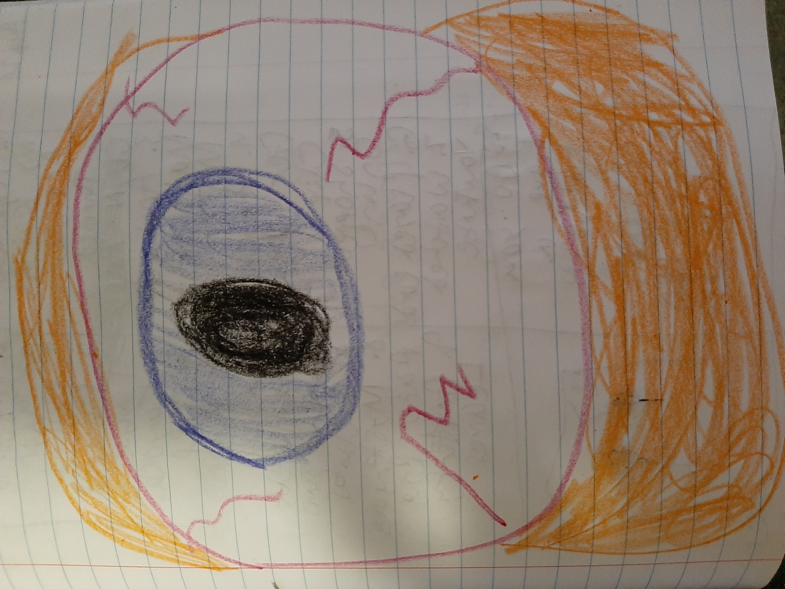
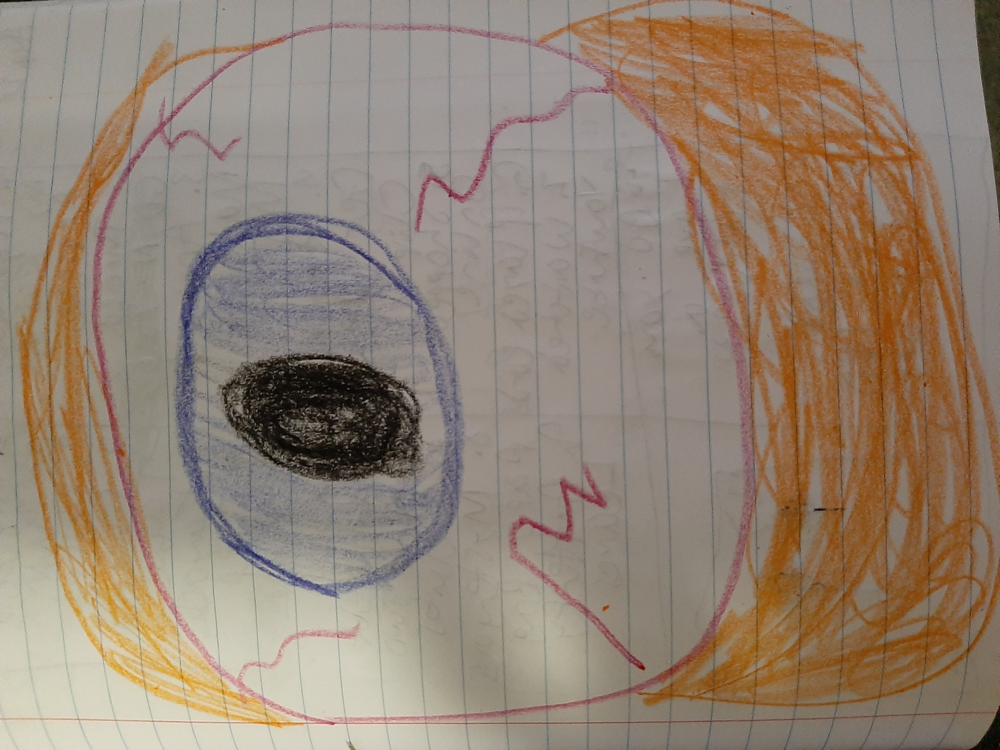

Jimmy wants to ask Patricia, the girl of his dreams, to prom. The trouble is, she’s the most popular girl in school, and all of the other boys are lined up to ask her out. So, Jimmy gets in line, and he waits and waits and waits. After fifteen minutes, it’s his turn, and he asks Patricia to the dance. She says, “Yes!”
Now, Jimmy has to go pick out a suit. He finds the perfect outfit, but the line to the cash register is atrocious. So, he hops in back, and he waits and waits and waits. After thirty minutes, he’s finally able to make his purchase.
A week before the big night, Jimmy realizes that he forgot to get a ticket! Unfortunately, half of the school forgot to get theirs too, and they’re crowding the ticket booth. So, Jimmy gets in line, and he waits and waits and waits. After an hour, he manages to snag the last available ticket.
Prom eventually rolls around, and it’s an absolute blast. Jimmy and Patricia are having the time of their lives. About halfway through, Patricia asks Jimmy if he would go get her some punch. He agrees, but deep down, he’s disgusted. Everyone’s probably thirsty at this point in the night, and he’s going to have to get in line and wait and wait and wait. But when he reaches the concessions, he can’t believe it. There’s no punch line.

 
